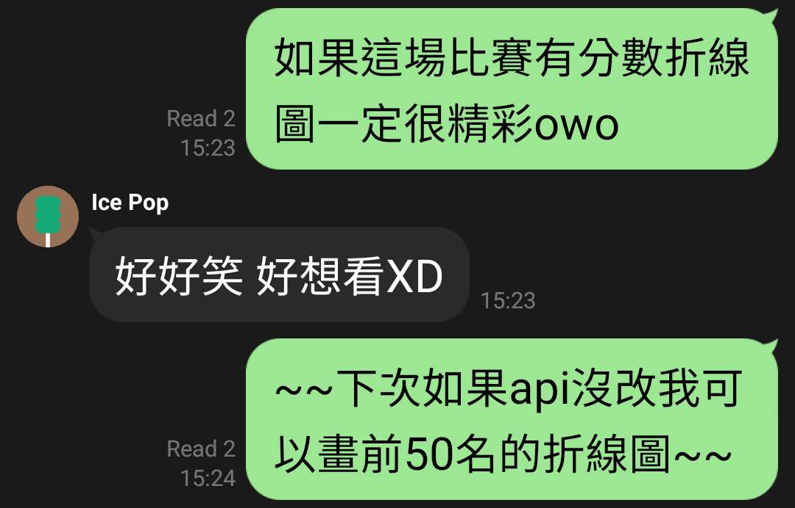

廢話不多說先上圖（手機建議橫著看）
去年幫自己挖了一個超級大的坑
結果今年 API 還真的幾乎沒改，做事
看起來很像是抓記分板，但我抓的其實是點個人資料時會出現的 top 50 隊伍和帳號
蹭了新 AWS 帳號的免費 EC2 額度，在朋友幫忙 debug 下寫了 cronjob，每個整點和 30 分都抓一次資料owob
莫名其妙寫了很久，但基本上就寫個簡單程式把以分數為主的資料改成以隊伍或人為主
完整資料還不確定要不要公開，如果有興趣可以戳我，整個抓下來的資料量大約是 500 KB，包含前 50 名的排名和分數
把資料變成好看動畫的部分則是交給線上工具 Flourish，第一次用他，但我覺得很好用，大推owo/